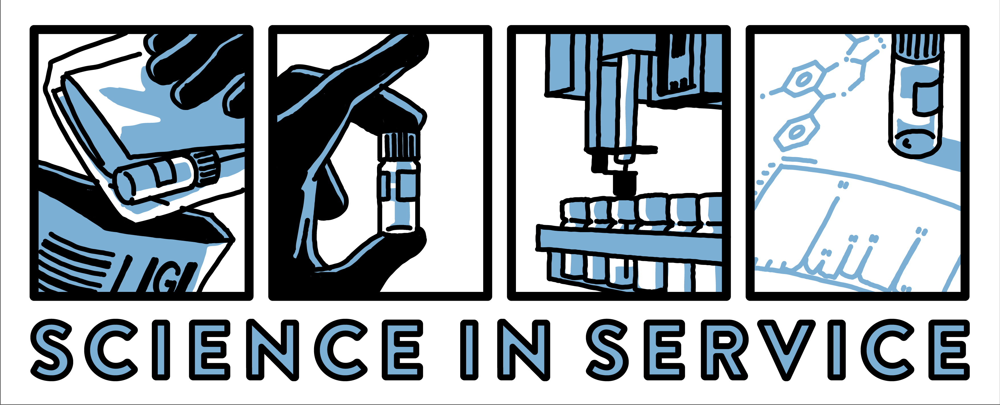
DAILY SLIDE DECK
Generated Tuesday, August 25, 2026 · 6:30 AM ET
UNC Street Drug Analysis Lab · OpioidData.org · results.streetsafe.supply
Orientation
Nightly pipeline
1 Upstream CSVs refresh daily
2 Rscript r/build_nightly.R at 2:30 AM
3 ggplot2 figures + stats land in figs/
4 This deck re-renders with fresh numbers
Charts in this design show illustrative placeholder values until the R wiring replaces them.
r/build_nightly.R
Part One
How samples are collected and shipped, how the lab analyzes them, and how results become the two public datasets — the ground rules behind every chart that follows.
Orientation
1 · Collect
Residue on a card with what the donor expected, felt, and saw
2 · Mail
Anonymous samples mailed from harm reduction programs statewide
3 · Analyze
GCMS identifies each substance and flags primary vs. trace abundance
4 · Publish
Results posted publicly and folded into these two datasets daily
Sample-level records: results.streetsafe.supply/sample/<sampleid>
The Data
1
Voluntary
Samples are provided voluntarily to a partnering organization — never collected covertly.
2
Anonymous
Individual sample donors are anonymous to the UNC lab; no identifying information travels with a sample.
3
Donor gets results first
Results must be returned to the sample donor in a timely manner — before any aggregate reporting.
Who submits
Health-serving organizations: harm reduction programs, drug user unions, public health agencies, and universities.
How samples travel
Collected as powders, pill fragments, swabs, or used cottons; dissolved in acetonitrile and shipped with a prepaid return envelope — under established harm reduction exemptions in state controlled-substance law and federal small-quantity hazardous-materials regulations.
Collection and shipping protocol details in the Supplemental Material
Static slide — reviewed by lab staff, not regenerated nightly
The Data
Dissolve & mail. Samples dissolved in acetonitrile and mailed to the lab in compliance with federal regulations.
Separate. Gas chromatography on a Thermo TraceGOLD TG-5SilMS column (30 m × 0.25 mm × 0.25 μm).
Detect. GCMS with an electron ionization source; qualitative results from a Thermo Scientific Q Exactive GC Orbitrap.
Identify. Untargeted search in Xcalibur Qual Browser 4.5, with fragmentation analysis against three libraries of drug standards.
Confirm. Every detected substance positively identified and confirmed with pure, commercially available reference standards.
Classify. Reported as primary or trace abundance — trace = less than 5% chromatogram peak height relative to the most abundant substance.
Qualitative GCMS — abundance is not concentration · full protocol and library details in the Supplemental Material
Static slide — reviewed by lab staff, not regenerated nightly
The Data
analysis_dataset.csv
Wide · one row per sample. Everything from the card — location, dates, expected substance, sensations, overdose involvement — plus ~60 derived lab_* 1/0 flags.
96 variables · quarterly denominators come from here
sampleid
lab_detail.csv
Long · one row per substance per sample. Standardized substance name, method (GCMS), abundance (blank = primary, "trace"), chemical-class flags, PubChem CID / CAS / UNII.
Source for substance-level counts and new detections
Direct downloads above · refreshed daily · also in Stata, Excel, SAS at data.streetsafe.supply/datasets/NC/
r/data.R::load_nc()
The Data
lab_xylazine = 1
Detected as a primary constituent
lab_xylazine_any = 1
Detected in any abundance — primary or trace
trace-only = any − primary
The light-blue increment stacked on every chart
Example sample
A powder sample contains xylazine in trace abundance:
lab_xylazine = 0
lab_xylazine_any = 1
Trace defined as less than 5% peak height of the most abundant molecule on the GCMS chromatogram.
Abundance is qualitative — trace ≠ quantified concentration and never implies purity.
Convention documented in technical_details.md · every following chart is stacked primary + trace-only
r/data.R::quarterly_rate()
Orientation
This deck conforms to WCAG 2.2 Level AA, the level required by UNC's Accessibility of Digital Content and Materials Standard and ADA Title II.
Found a barrier?
Report it to the UNC Digital Accessibility Office:
digital_accessibility@unc.edu
digitalaccessibility.unc.edu/report
919-962-7636
Static slide — reviewed by lab staff, not regenerated nightly
Part Two
How much of the state the program sees: statewide totals at a glance, sample volume by quarter, and county-level reach — the denominators behind every rate in this deck.
The Data
PLACEHOLDER · figs/stats.json
March 2022 to Tuesday, August 25, 2026
N = 8,412 NC samples analyzed
Mailed in from 86 harm reduction programs
Collected across 78 counties
463 distinct substances detected to date
Unique samples = n_distinct(sampleid) · substances from lab_detail.substance · includes samples with date_complete 07 Jun 2022 – 25 Aug 2026
r/build_nightly.R → figs/stats.json
The Data
PLACEHOLDER · nightly R
Unique samples completed
800
600
400
200
0
24Q3
24Q4
25Q1
25Q2
25Q3
25Q4
26Q1
26Q2
26Q3 · partial
612
unique samples completed last quarter (26Q2)
These quarterly counts are the denominator for every per-1,000 rate that follows.
Unique sampleid by calendar quarter of date_complete · current quarter shown striped + labeled partial · data table: Appendix A1
r/figs.R::fig_samples_quarterly → figs/07_samples_quarterly.png
The Data
PLACEHOLDER · nightly R
All time
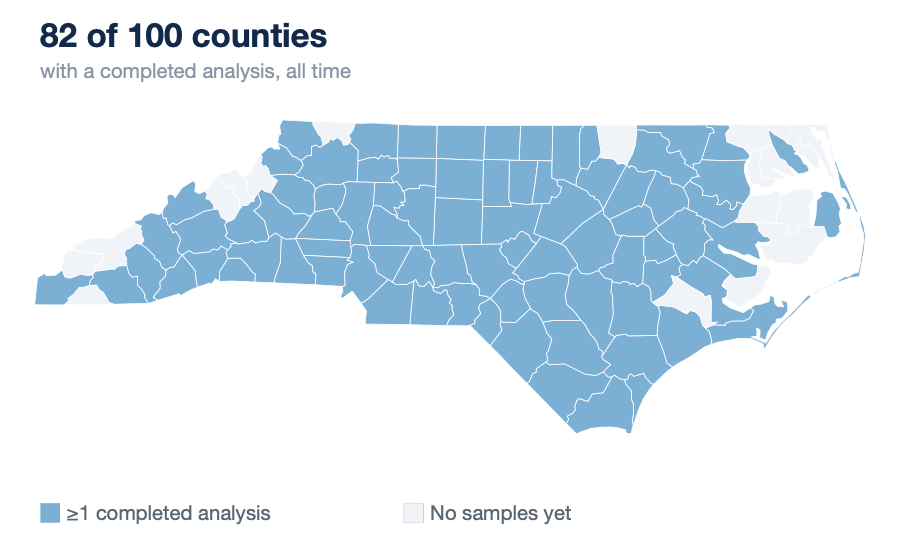
Samples by county — last 12 months
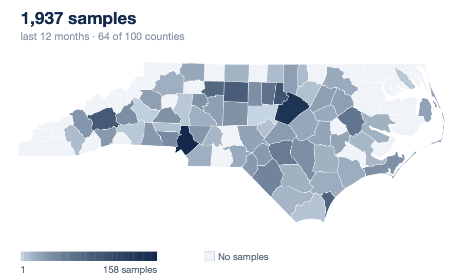
County = samplecounty · left: ≥1 completed analysis ever · right: unique samples per county (sqrt color scale) · all time: 07 Jun 2022 – 25 Aug 2026 · last 12 months: 26 Aug 2025 – 25 Aug 2026* · coverage reflects participation, not prevalence
r/figs.R::fig_county_coverage → figs/08_coverage_alltime.png + 08_counts_12mo.png
Part Three
Donor-reported context collected with every sample: what they expected, how it felt, how it looked, and whether an overdose was involved.
What the Card Tells Us
PLACEHOLDER · nightly R
fentanyl
2,940
methamphetamine
1,830
heroin ; fentanyl
1,160
cocaine / crack
905
unknown
640
pressed pills
410
MDMA
265
expectedsubstance (verbatim card write-in, semicolon lists split) · derived flags: expect_opioid, expect_fentanyl, expect_meth, expect_cocaine, expect_stimulant… · includes samples with date_complete 07 Jun 2022 – 25 Aug 2026 · data table: Appendix A2
r/figs.R::fig_expected → figs/09_expected_substances.png
What the Card Tells Us
PLACEHOLDER · nightly R
Expected fentanyl → fentanyl found (any)
93%
Expected meth → meth found (any)
96%
Expected cocaine → cocaine found (any)
89%
The gap is where surprises live — the deck's later substance slides show what else was in there.
Numerator uses lab_*_any (primary or trace) among samples with expect_* = 1 · includes samples with date_complete 07 Jun 2022 – 25 Aug 2026 · data table: Appendix A3
r/figs.R::fig_expect_vs_lab → figs/10_expect_vs_lab.png
What the Card Tells Us
PLACEHOLDER · nightly R
normal
1,510
weird
980
stronger
840
weaker
615
unpleasant
450
nice
240
Orange bars — weird and unpleasant — feed the derived flag sen_weird, an early-warning signal for adulterants.
Also derived: sen_strength (−1 / 0 / +1), sen_up, sen_down, sen_skin, sen_seizure, sen_burn.
sensations (circled on card, semicolon lists split) · post-consumption samples only (consumed = 1) · includes samples with date_complete 07 Jun 2022 – 25 Aug 2026
r/figs.R::fig_sensations → figs/11_sensations.png
What the Card Tells Us
PLACEHOLDER · nightly R
Reported strength vs expected
sen_strength among consumed samples where the substance was lab-detected
Atypical sensations, in aggregate
% reporting unpleasant, weird smell, or weird taste (any of the three)
Fentanyl
31%
Xylazine
44%
Methamphetamine
22%
Cocaine
27%
Bar scale 0–50%
sensations semicolon lists parsed per report · consumed = 1 only · denominator: consumed samples with lab_*_any = 1 · includes samples with date_complete 07 Jun 2022 – 25 Aug 2026
r/figs.R::fig_sensations_substance → figs/12_sen_{strength,atypical}.png
What the Card Tells Us
PLACEHOLDER · nightly R
Samples with methamphetamine or cocaine detected (any abundance); samples in both classes appear on both slides · sensations semicolon lists parsed + sen_strength (own denominator) · consumed = 1 only · before: 07 Jun 2022 – 25 Aug 2025 · past 12 months: 26 Aug 2025 – 25 Aug 2026* · Δ in percentage points
r/figs.R::fig_sensations_shift("stim") → figs/13_sensations_shift_stim.png
What the Card Tells Us
PLACEHOLDER · nightly R
Samples with an opioid (fentanyl, heroin) or benzodiazepine detected (any abundance); samples in both classes appear on both slides · sensations semicolon lists parsed + sen_strength (own denominator) · consumed = 1 only · before: 07 Jun 2022 – 25 Aug 2025 · past 12 months: 26 Aug 2025 – 25 Aug 2026* · Δ in percentage points
r/figs.R::fig_sensations_shift("opi") → figs/14_sensations_shift_opi.png
What the Card Tells Us
PLACEHOLDER · nightly R
Overdose-involved per 1,000 samples
160
120
80
40
0
24Q3
24Q4
25Q1
25Q2
25Q3
25Q4
26Q1
26Q2
26Q3 · partial
68
overdose-involved samples per 1,000 completed, 26Q2
Includes fatal and non-fatal events. Missing ≠ no overdose — involvement is only recorded when reported.
od = 1 (reported involved) per 1,000 unique samples completed that quarter · verbatim context in overdose_notes
r/figs.R::fig_overdose → figs/12_overdose.png
What the Card Tells Us
PLACEHOLDER · nightly R
Color
white
2,310
tan
1,290
clear
880
brown
700
blue
410
Texture
powder
3,050
chunky
1,410
crystals
1,040
pill / fake pill
590
tar
300
color, texture (card v3+, semicolon lists split) · derived: bright_color excludes white/tan/brown family — orange bar above · includes samples with date_complete 07 Jun 2022 – 25 Aug 2026
r/figs.R::fig_color_texture → figs/13_color_texture.png
Part Four
GCMS results as quarterly rates per 1,000 samples — stacked primary (solid) + trace-only (light) for nine priority substances.
What the Lab Detects
PLACEHOLDER · nightly R
Samples
2000
1500
1000
500
0
0
1
2
3
4
5
6+
Median NC sample: 2 primary substances, 5 in any abundance — trace detections carry most of the complexity.
Distribution of substances detected per sample, both definitions shown side by side · includes samples with date_complete 07 Jun 2022 – 25 Aug 2026
r/figs.R::fig_substances_per_sample → figs/15_substances_per_sample.png
What the Lab Detects
PLACEHOLDER · nightly R
fentanyl
4,120
methamphetamine
3,010
caffeine
2,570
xylazine
2,230
4-ANPP
2,090
cocaine
1,540
quinine
1,280
medetomidine
960
acetaminophen
840
levamisole
790
lab_detail.substance counts · solid = primary abundance, light = trace · standardized names (PubChem-linked) · includes samples with date_complete 07 Jun 2022 – 25 Aug 2026
r/figs.R::fig_top_substances → figs/16_top_substances.png
What the Lab Detects
PLACEHOLDER · nightly R
fentanyl
4,120
methamphetamine
3,010
caffeine
2,570
xylazine
2,230
4-ANPP
2,090
cocaine
1,540
quinine
1,280
medetomidine
430
acetaminophen
380
levamisole
360
lab_detail.substance counts · solid = primary abundance, light = trace · standardized names (PubChem-linked) · window: date_complete 26 Aug 2025 – 25 Aug 2026* (trailing 12 months, current month partial)
r/figs.R::fig_top_substances(window_months = 12) → figs/18_top_substances_12mo.png
What the Lab Detects
PLACEHOLDER · nightly R
Samples
1000
750
500
250
0
0
1
2
3
4
5
6+
Median sample, past 12 months: 2 primary substances, 5 in any abundance — trace detections carry most of the complexity.
Distribution of substances detected per sample, both definitions shown side by side · window: date_complete 26 Aug 2025 – 25 Aug 2026* (trailing 12 months, current month partial)
r/figs.R::fig_substances_per_sample(window_months = 12) → figs/19_substances_per_sample_12mo.png
What the Lab Detects
PLACEHOLDER · nightly R
498
per 1,000 samples had fentanyl as a primary substance, 26Q2 — 578 in any abundance
Series: lab_fentanyl (primary) + trace-only (lab_fentanyl_any − lab_fentanyl) · exact match, analogues excluded · per 1,000/month · LOESS on complete months · * = partial month
r/figs.R::fig_drug_trend("17_fentanyl") → figs/17_fentanyl_trend.png
What the Lab Detects
PLACEHOLDER · nightly R
447
per 1,000 samples carried 4-ANPP in any abundance, 26Q2 — almost entirely trace
Impurities like 4-ANPP mark the fentanyl synthesis route; shifts can signal supply-chain changes.
Flags from lab_detail regex '4-ANPP|phenethyl' (see lab_fentanyl_impurity) · per 1,000/month · LOESS on complete months · * = partial month
r/figs.R::fig_drug_trend_pattern("18_fent_impurities") → figs/18_fent_impurities_trend.png
What the Lab Detects
PLACEHOLDER · nightly R
253
per 1,000 samples had xylazine as a primary substance, 26Q2 — 371 in any abundance
lab_xylazine_trace isolates trace-only detections; other alpha-2 agonists are counted separately.
Series: lab_xylazine (primary) + trace-only (lab_xylazine_any − lab_xylazine) · per 1,000/month · LOESS on complete months · * = partial month
r/figs.R::fig_drug_trend("19_xylazine") → figs/19_xylazine_trend.png
What the Lab Detects
PLACEHOLDER · nightly R
152
per 1,000 samples primary in 26Q2 — 224 in any abundance, still climbing
Alpha-2 agonist displacing xylazine in some supplies. No derived flag pair yet — flagged from lab_detail.
Flags from lab_detail regex 'medetomidine' with abundance split · per 1,000/month · LOESS on complete months · * = partial month
r/figs.R::fig_drug_trend_pattern("20_medetomidine") → figs/20_medetomidine_trend.png
What the Lab Detects
PLACEHOLDER · nightly R
304
per 1,000 samples primary in 26Q2 — 388 in any abundance
Stable across quarters — the moving story is what rides along with it (slide 27).
Series: lab_meth (primary) + trace-only (lab_meth_any − lab_meth) · per 1,000/month · LOESS on complete months · * = partial month
r/figs.R::fig_drug_trend("21_meth") → figs/21_meth_trend.png
What the Lab Detects
PLACEHOLDER · nightly R
138
per 1,000 samples primary in 26Q2 — 202 in any abundance
Cocaine samples are where levamisole and fentanyl traces most often surprise donors.
Series: lab_cocaine (primary) + trace-only (lab_cocaine_any − lab_cocaine) · per 1,000/month · LOESS on complete months · * = partial month
r/figs.R::fig_drug_trend("22_cocaine") → figs/22_cocaine_trend.png
What the Lab Detects
PLACEHOLDER · nightly R
223
per 1,000 samples in any abundance, 26Q2 — only 51 primary
Trace-dominant cutting agent, overwhelmingly in cocaine samples; linked to skin necrosis.
lab_levamisole_any is the only derived flag — primary/trace split rebuilt from lab_detail abundance · per 1,000/month · LOESS on complete months · * = partial month
r/figs.R::fig_drug_trend_pattern("23_levamisole") → figs/23_levamisole_trend.png
What the Lab Detects
PLACEHOLDER · nightly R
8
per 1,000 samples in any abundance, 26Q2 — rare, but each detection matters
~100× fentanyl's potency: single detections can justify local alerts even at near-zero rates.
Series: lab_carfentanil (primary) + trace-only (lab_carfentanil_any − lab_carfentanil) · per 1,000/month · LOESS on complete months · * = partial month
r/figs.R::fig_drug_trend("24_carfentanil") → figs/24_carfentanil_trend.png
What the Lab Detects
PLACEHOLDER · nightly R
39
per 1,000 samples in any abundance, 26Q2 — sporadic but slowly rising
Synthetic opioid class (etonitazene, metonitazene, protonitazene…) counted together via regex.
Flags from lab_detail regex 'nitazene|etonitazene|metonitazene|protonitazene|isotonitazene' · per 1,000/month · LOESS on complete months · * = partial month
r/figs.R::fig_drug_trend_pattern("25_nitazenes") → figs/25_nitazenes_trend.png
What the Lab Detects
PLACEHOLDER · nightly R
190
per 1,000 samples in any abundance, 26Q2 — climbing every quarter since first NC detection
Industrial light stabilizer, not a drug — unknown human toxicity at these exposures.
Flags from lab_detail regex 'BTMPS|bis(2,2,6,6…' · per 1,000/month · LOESS on complete months · * = partial month
r/figs.R::fig_drug_trend_pattern("26_btmps") → figs/26_btmps_trend.png
Two-Year Trends
PLACEHOLDER · nightly R
453
/ month
▼ 5%
561
per 1,000
▲ 3%
466
per 1,000
▲ 9%
389
per 1,000
▲ 6%
229
per 1,000
▼ 2%
351
per 1,000
▼ 7%
199
per 1,000
▼ 7%
157
per 1,000
▲ 2%
11
per 1,000
▲ 81%
18
per 1,000
▲ 47%
101
per 1,000
▲ 1%
57
per 1,000
▼ 9%
Monthly values, trailing 24 months from run date · line = LOESS on complete months · Δ = last complete month vs prior · green = favorable direction · orange point* = partial month · data table: Appendix A4
r/figs.R::fig_trend_dashboard → figs/27_dashboard.png
What the Lab Detects
PLACEHOLDER · nightly R
Both lines trending up — unintentional opioid exposure risk for people who use stimulants.
lab_fentanyl_any = 1 per 1,000 samples where lab_meth = 1 (or lab_cocaine = 1) that quarter
r/figs.R::fig_opioid_stimulant → figs/28_opioid_stimulant.png
Part Five
Key substances in the legacy OCME dashboard format the state expects — headline month comparison, month-to-month lines, year-to-year YTD bars, and the co-detection mix — computed from drug checking samples instead of death records.
PLACEHOLDER · nightly R
44
71
Fentanyl-positive samples^ in Aug 2026* compared to 71 in Aug 2025
^Detected in any abundance. Donated samples are not a census of the supply; detection ≠ harm caused.
Year to year: Fentanyl-positive samples are down 23% for 2026 vs this time last year.
Percent change is YTD total compared to the same day-of-year last year.
Month to month: From Jul '26 to Aug '26 positive samples decreased 4%.
Counts fluctuate month-to-month; reference YTD change for trends. ━ 2025 ━ 2026 · * partial month
Cocaine was the largest co-detection in fentanyl-positive samples.
UNC Street Drug Analysis Lab · opioiddata.org
r/figs.R::fig_state_view("fentanyl") → figs/state_fentanyl_{line,years,mix}.png
26 Aug 2026
PLACEHOLDER · nightly R
38
36
Xylazine-positive samples^ in Aug 2026* compared to 36 in Aug 2025
^Detected in any abundance. Donated samples are not a census of the supply; detection ≠ harm caused.
Year to year: Xylazine-positive samples are up 22% for 2026 vs this time last year.
Percent change is YTD total compared to the same day-of-year last year.
Month to month: From Jul '26 to Aug '26 positive samples decreased 5%.
Counts fluctuate month-to-month; reference YTD change for trends. ━ 2025 ━ 2026 · * partial month
Fentanyl was the largest co-detection in xylazine-positive samples.
UNC Street Drug Analysis Lab · opioiddata.org
r/figs.R::fig_state_view("xylazine") → figs/state_xylazine_{line,years,mix}.png
26 Aug 2026
PLACEHOLDER · nightly R
39
39
Methamphetamine-positive samples^ in Aug 2026* compared to 39 in Aug 2025
^Detected in any abundance. Donated samples are not a census of the supply; detection ≠ harm caused.
Year to year: Methamphetamine-positive samples are up 13% for 2026 vs this time last year.
Percent change is YTD total compared to the same day-of-year last year.
Month to month: From Jul '26 to Aug '26 positive samples decreased 7%.
Counts fluctuate month-to-month; reference YTD change for trends. ━ 2025 ━ 2026 · * partial month
Fentanyl was the largest co-detection in methamphetamine-positive samples.
UNC Street Drug Analysis Lab · opioiddata.org
r/figs.R::fig_state_view("meth") → figs/state_meth_{line,years,mix}.png
26 Aug 2026
PLACEHOLDER · nightly R
28
26
Cocaine-positive samples^ in Aug 2026* compared to 26 in Aug 2025
^Detected in any abundance. Donated samples are not a census of the supply; detection ≠ harm caused.
Year to year: Cocaine-positive samples are up 22% for 2026 vs this time last year.
Percent change is YTD total compared to the same day-of-year last year.
Month to month: From Jul '26 to Aug '26 positive samples decreased 7%.
Counts fluctuate month-to-month; reference YTD change for trends. ━ 2025 ━ 2026 · * partial month
Levamisole was the largest co-detection in cocaine-positive samples.
UNC Street Drug Analysis Lab · opioiddata.org
r/figs.R::fig_state_view("cocaine") → figs/state_cocaine_{line,years,mix}.png
26 Aug 2026
Part Six
North Carolina in three regions — eastern, central, western — assigned by county of sample collection. For each key substance: prevalence per 1,000 samples last quarter, and the change from the quarter before.
PLACEHOLDER · nightly R
Prevalence per 1,000 samples
Fentanyl-positive (any abundance) per 1,000 samples completed in the region, 26Q2
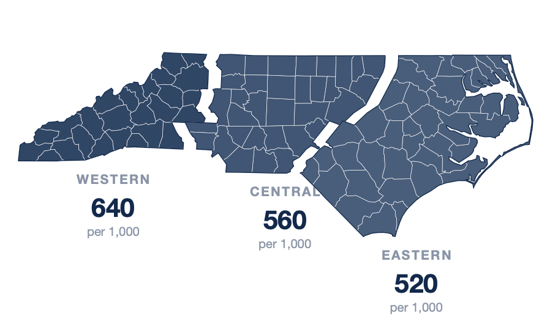
Change from last quarter
% change in the regional rate, 26Q2 vs 26Q1 · red = increase · green = decrease
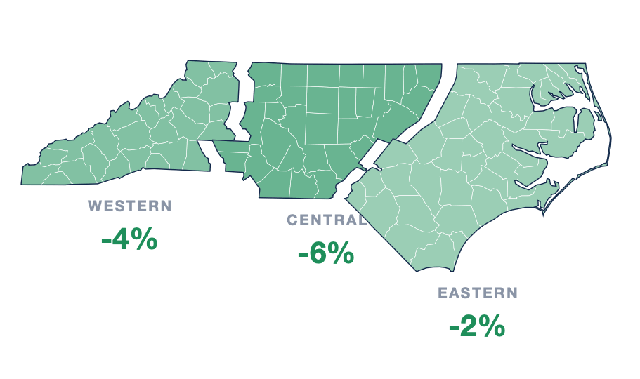
Regions assigned by county of sample collection · r/nc_county_regions.csv
r/figs.R::fig_region_maps("fentanyl") → figs/maps_fentanyl_{prev,chg}.png
26 Aug 2026
PLACEHOLDER · nightly R
Prevalence per 1,000 samples
Xylazine-positive (any abundance) per 1,000 samples completed in the region, 26Q2
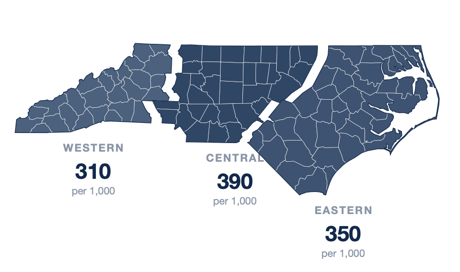
Change from last quarter
% change in the regional rate, 26Q2 vs 26Q1 · red = increase · green = decrease
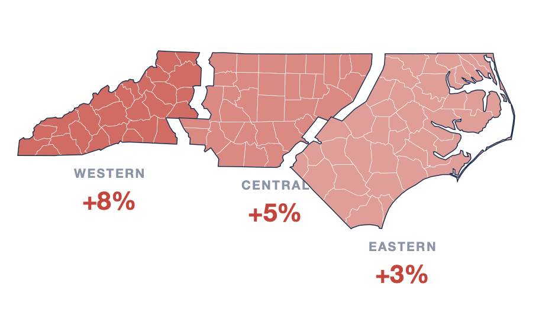
Regions assigned by county of sample collection · r/nc_county_regions.csv
r/figs.R::fig_region_maps("xylazine") → figs/maps_xylazine_{prev,chg}.png
26 Aug 2026
PLACEHOLDER · nightly R
Prevalence per 1,000 samples
Methamphetamine-positive (any abundance) per 1,000 samples completed in the region, 26Q2
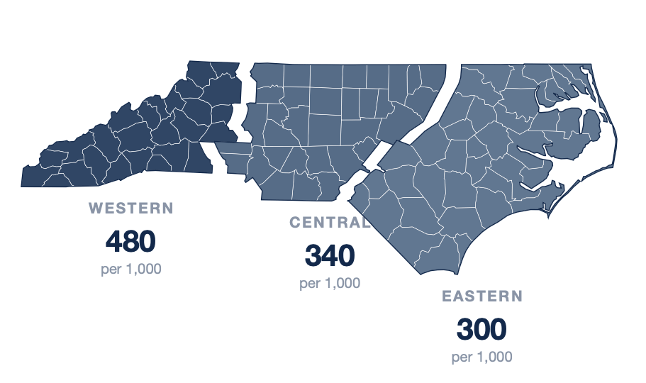
Change from last quarter
% change in the regional rate, 26Q2 vs 26Q1 · red = increase · green = decrease
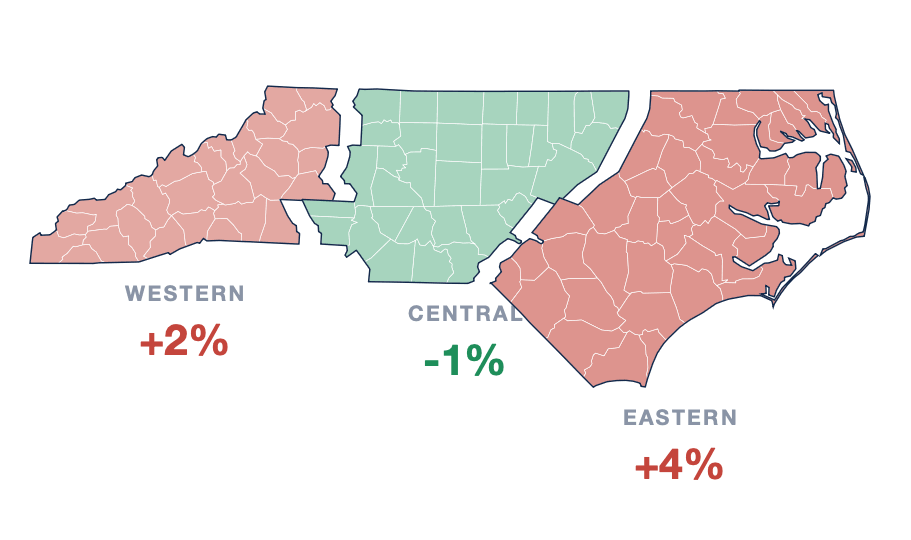
Regions assigned by county of sample collection · r/nc_county_regions.csv
r/figs.R::fig_region_maps("meth") → figs/maps_meth_{prev,chg}.png
26 Aug 2026
PLACEHOLDER · nightly R
Prevalence per 1,000 samples
Cocaine-positive (any abundance) per 1,000 samples completed in the region, 26Q2
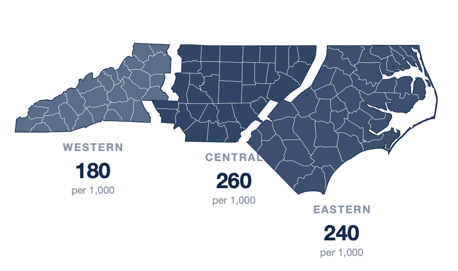
Change from last quarter
% change in the regional rate, 26Q2 vs 26Q1 · red = increase · green = decrease
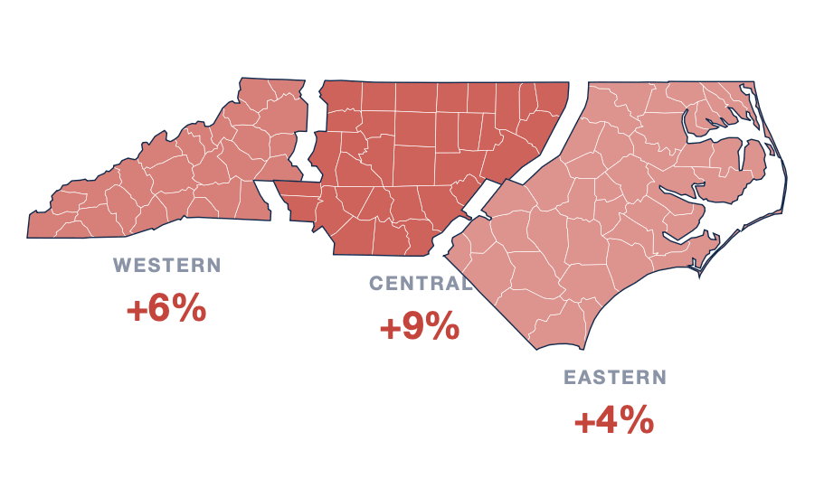
Regions assigned by county of sample collection · r/nc_county_regions.csv
r/figs.R::fig_region_maps("cocaine") → figs/maps_cocaine_{prev,chg}.png
26 Aug 2026
Part Seven
Substances appearing in North Carolina for the first time ever, surfaced within the last three months of lab completions.
New Detections
PLACEHOLDER · nightly R
Substance
First NC detection
Abundance
Sample record
Definition: min(date_complete) per substance in NC falls within the last 91 days · linked to the public sample record · data table: Appendix A5
r/new_detections.R → figs/29_new_detections.json
New Detections
Medetomidine
Fastest-growing adulterant; harder to reverse than xylazine with standard protocols.
First NC detection: 2024Q4 · slide 20
BTMPS
Industrial chemical of unknown toxicity, now routine in fentanyl samples nationally.
First NC detection: 2024Q4 · slide 26
Nitazene analogues
New analogues keep appearing; potency varies wildly across the class.
Newest analogue: Aug 2026 · slide 25
Curated by lab staff — the one slide reviewed by a human rather than regenerated nightly
Part Eight
What these data can and cannot say — read before citing any number in this deck.
Fine Print
Full methods and variable notes: technical_details.md + codebook in the opioiddatalab/drugchecking repository
Fine Print
Card variables
expectedsubstance · expect_*
sensations · sen_*
color · bright_color · texture
overdose · od · overdose_notes
sampletype · collection · consumed
location · county · state · countyfips
Derived lab flags
lab_<drug> = primary
lab_<drug>_any = primary or trace
lab_<drug>_trace = trace only
lab_num_substances(_any)
lab_null · primary · trace
lab_fentanyl_impurity
lab_detail columns
sampleid · substance · method
abundance (blank = primary)
chemical-class flags
PubChem CID · CAS · UNII
date_complete
Full codebook (96 variables): github.com/opioiddatalab/drugchecking → datasets/unc_druchecking_codebook.txt
Fine Print
NC extracts
data.streetsafe.supply/datasets/NC/analysis_dataset.csv
data.streetsafe.supply/datasets/NC/lab_detail.csv
Refresh
Daily · four formats (CSV, Stata, Excel, SAS) · link on sampleid
Documentation
Codebook + technical_details.md in github.com/opioiddatalab/drugchecking
Sample records
Public, human-readable result pages at results.streetsafe.supply
Terms
Data Use & Protection Statement at results.streetsafe.supply/data-use
Questions about access or additional chemical classifications: contact the lab via opioiddata.org
Appendix
The numbers behind the key charts, as accessible tables — regenerated nightly with the figures. Chart slides point here from their footers.
Appendix — Data Tables
| Quarter | Unique samples | Status |
|---|---|---|
| 24Q3 | 408 | complete |
| 24Q4 | 440 | complete |
| 25Q1 | 479 | complete |
| 25Q2 | 518 | complete |
| 25Q3 | 494 | complete |
| 25Q4 | 549 | complete |
| 26Q1 | 581 | complete |
| 26Q2 | 612 | complete |
| 26Q3 | 377 | partial quarter |
Chart: slide 11 · unique sampleid by calendar quarter of date_complete · values are placeholders until nightly hydration
r/build_nightly.R → figs/alt.json (tables)
Appendix — Data Tables
| Expected substance (verbatim) | Samples |
|---|---|
| fentanyl | 2,940 |
| methamphetamine | 1,830 |
| heroin ; fentanyl | 1,160 |
| cocaine / crack | 905 |
| unknown | 640 |
| pressed pills | 410 |
| MDMA | 265 |
Chart: slide 14 · expectedsubstance, semicolon lists split · values are placeholders until nightly hydration
r/figs.R::fig_expected → figs/alt.json (tables)
Appendix — Data Tables
| Expectation | Lab confirmation (any abundance) |
|---|---|
| Expected fentanyl → fentanyl found | 93% |
| Expected methamphetamine → methamphetamine found | 96% |
| Expected cocaine → cocaine found | 89% |
Chart: slide 15 · numerator lab_*_any among samples with expect_* = 1 · values are placeholders until nightly hydration
r/figs.R::fig_expect_vs_lab → figs/alt.json (tables)
Appendix — Data Tables
| Metric | Per 1,000 samples |
|---|---|
| Fentanyl (any) | 561 |
| Fentanyl impurities (any) | 466 |
| Xylazine (any) | 389 |
| Methamphetamine (any) | 351 |
| Medetomidine (any) | 229 |
| Cocaine (any) | 199 |
| Metric | Per 1,000 samples |
|---|---|
| Levamisole (any) | 157 |
| BTMPS (any) | 101 |
| Overdose-involved | 57 |
| Nitazenes (any) | 18 |
| Carfentanil (any) | 11 |
Chart: slide 37 · rate = per 1,000 unique samples completed in the latest complete month (453 samples) · values are placeholders until nightly hydration
r/figs.R (dashboard) → figs/alt.json (tables)
Appendix — Data Tables
| Substance | First NC detection | Abundance | Sample record |
|---|---|---|---|
| N-desethyl isotonitazene | Aug 14, 2026 | trace | 821058 |
| dexmedetomidine | Aug 2, 2026 | primary | 820903 |
| 2-fluorodeschloroketamine | Jul 21, 2026 | primary | 819913 |
| bromazolam | Jul 9, 2026 | trace | 819237 |
| phenethyl 4-ANPP | Jun 12, 2026 | trace | 812660 |
Chart: slide 50 · min(date_complete) per substance within the last 91 days · values are placeholders until nightly hydration
r/new_detections.R → figs/alt.json (tables)
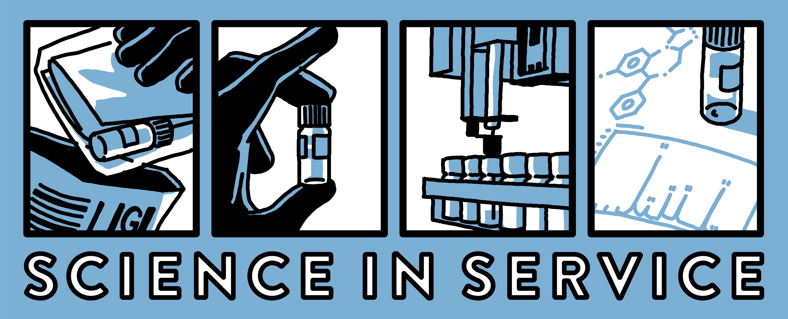
UNC Street Drug Analysis Lab
OpioidData.org · results.streetsafe.supply
Samples gathered by North Carolina harm reduction programs and analyzed by the UNC Opioid Data Lab. This brief regenerates nightly; cite the generation date on the title slide.